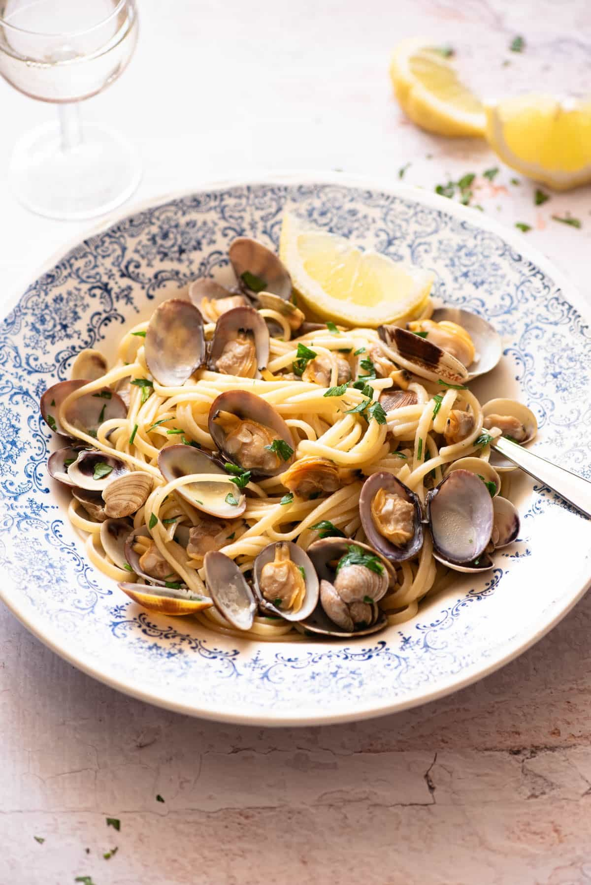

Linguine alle Vongole

Linguine alle Vongole is a classic
Italian seafood pasta made with
fresh clams, garlic, white wine
and lemon.
One of my favorite seafooddishes has got to be Linguine alle
Vongole. The clams are sweet, salty and delicious, there's lots of fresh
garlic, zingy lemon, white wine and fresh parsely.
Ingredients
- 14 oz linguine
- 2.2 lbs Vongole (clams)
- 2 cloves garlic
- 1/2 cup white wine
- 1 large bunch fresh parsley
- 1 squeezed lemon juice
- olive oil
-
Bring a large pot of water to a boil and salt it well.
-
Meanwhile, rinse the clams in cold running water
discarding any broken ones and any that remain open
after rinsing.
-
Add the pasta to the boiling water and cook until al dente.
-
Finely chop the garlic, add it to a large saute pan around
gently fry the garlic for about 30-60 seconds. Next, add
the clams and add the white wine. Cover the pan with a lid
and give the clams a gentle shake.
-
Keep the lid closed until the clams are all fully open.
-
Once the clams have opened, turn the heat off and add the
cooked pasta, fresh chopped parsley and lemon. Toss
everything together for another 1-2 minutes so the pasta
absorbs some of the juices and serve straight away.